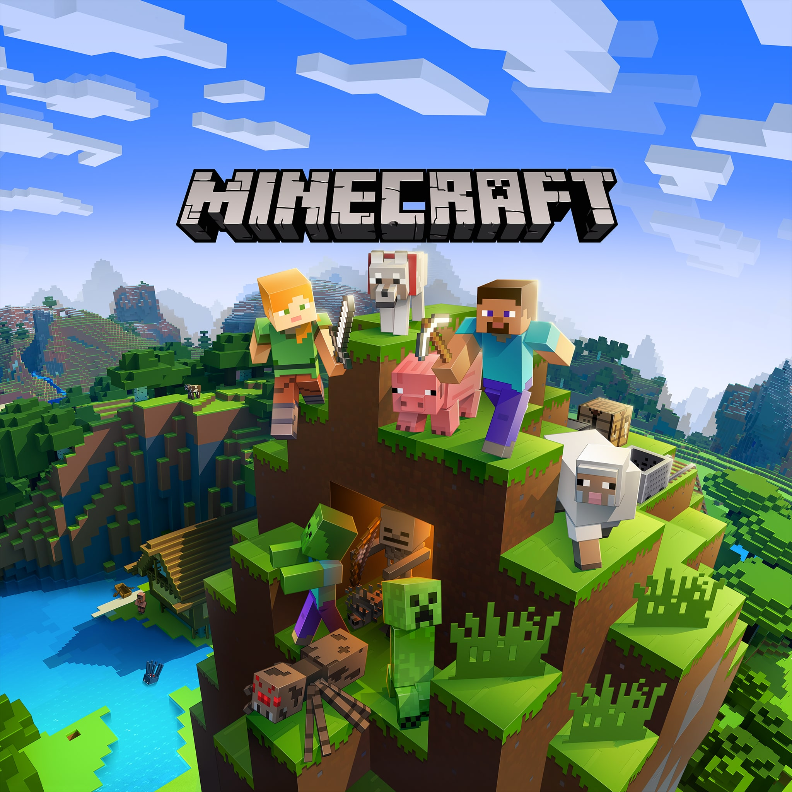
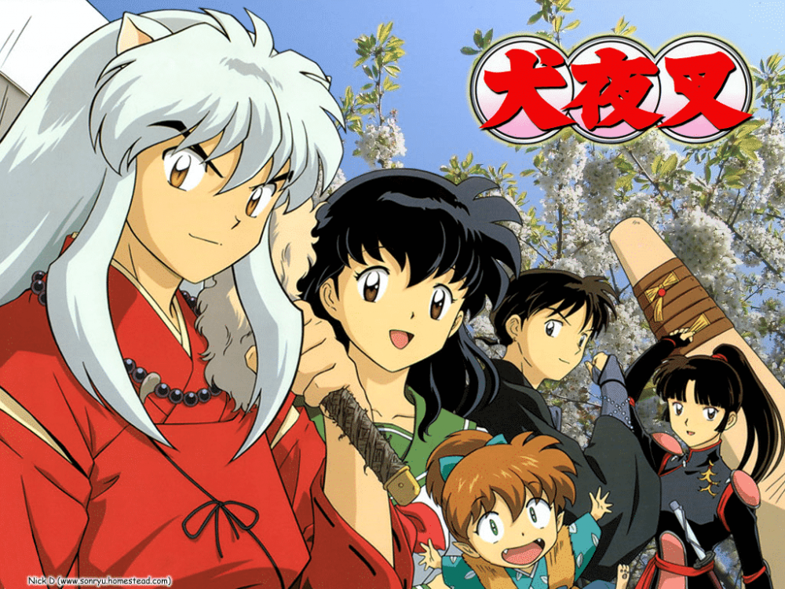

Un poco de mi vida
Mi nombre es Kevin Elías Luna Palacios, tengo 19 años y vivo en Nejapa, San Salvador. Actualmente soy
estudiante becado en la ESEN, donde también tengo el honor de servir como Presidente de la asociación
EduTech. Desde pequeño siempre sentí curiosidad por la tecnología y cómo funcionan las cosas detrás de
las pantallas, lo que eventualmente me llevó a descubrir mi pasión por la programación y la
ciberseguridad.
Soy una persona multifacética que encuentra equilibrio entre mis responsabilidades académicas y mis
pasatiempos personales. Creo firmemente que la diversidad de intereses enriquece mi perspectiva del
mundo y me ayuda a ser más creativo en mis proyectos tecnológicos. Mi objetivo principal es convertirme
en un profesional destacado en el campo de la ciberseguridad, específicamente como pentester, para
ayudar a crear un entorno digital más seguro para todos.
Un poco de mis estudios
Mi formación comenzó en el Colegio Español Padre Arrupe, donde descubrí mi vocación por la tecnología.
Recuerdo claramente la emoción que sentí cuando escribí mis primeras líneas de código en Java y Python,
y cómo ese momento definió lo que quería hacer con mi futuro.
Actualmente, estudio en la ESEN gracias a una beca que obtuve por mi desempeño académico. Esta
oportunidad me ha permitido profundizar mis conocimientos técnicos mientras desarrollo habilidades en el
área de negocios y emprendimiento. Paralelamente a mis estudios formales, dedico tiempo al
autoaprendizaje en diferentes temas como ciberseguridad, especializándome en pruebas de penetración, ya
que quiero convertirme en un ethical hacker que contribuya positivamente al mundo digital.
Un poco de mi rol en la sociedad
Como Presidente de la asociación EduTech en la ESEN, tengo la responsabilidad de coordinar iniciativas
que acerquen la tecnología a más estudiantes. Esta experiencia me ha enseñado valiosas lecciones sobre
liderazgo, trabajo en equipo y gestión de proyectos. Organizamos eventos, workshops y charlas con
profesionales de la industria, creando oportunidades para que mis compañeros amplíen sus conocimientos y
conexiones en el sector tecnológico.
Lo que más disfruto de este rol es ver cómo nuestros esfuerzos impactan positivamente en la comunidad
estudiantil del sector público. He tenido la satisfacción de ver a compañeros descubrir su interés por
la tecnología y la enseñanza gracias a nuestras actividades, y eso me motiva a seguir trabajando con
entusiasmo.
Un poco de mi música
Yo y mi música
Mis gustos musicales viajan por diferentes géneros y ritmos y aquí un poco de ellos y mis creadores
preferidos
Indie Rock
Los Bunkers
Una de mis bandas favoritas, con letras profundas y melodías que conectan con
emociones reales. Aparte de que sus ritmos realmente son muy pegajosos
Cuarteto de Nos
Me encanta su mezcla de humor y crítica social en sus letras. Incluso intenté ir
al concierto de hace 1 año que llevaron acabo en el país.
Potsu
Artista que mezcla lo-fi con rock alternativo que ocacionalmente escucho para
relajarme y concentrarme. Al ser un artista independiente tiene pocos seguidores.
Espineta
Proyecto musical español con sonidos experimentales. Marcó las bases del rock
alternativo en américa, además de ser un pionero en el género disruptivo del Indie Rock.
Lemon Demon

Música indie con letras creativas y algunas veces humorísticas. Si bien es un
artista poco conocido, tiene temas músicales muy pegajosos, llamativos y únicos.
Música Instrumental
Cassiopea
Grupo de Jazz fusion con increíbles ejecuciones instrumentales y con un recorrido
musical muy amplio.
TSquare
Similar a Cassiopea, un grupo de Jazz fusion japones, añade solos de saxofón
extraordinarios y que han marcado muchos momentos en sus conciertos.
Beethoven
Clásicos atemporales que disfruto oír y tocar en mi violín, aparte que es uno de
los expositores
C418
Principalmente conocido por la banda sonora de Minecraft, perfecta para
concentrarme y tener un mood tranquilo y en paz
Mi literatura y yo
Otro punto importante es lo que leo y me gusta leer, donde el género que domina la lista es la ciencia
ficción, se abre las páginas de mis gustos aquí.
"El Problema de los Tres Cuerpos" y la Saga completa de Liu Cixin
Una obra maestra de ciencia ficción 2006 dura que explora física, astronomía y
el contacto con civilizaciones alienígenas de manera profundamente científica y filosófica.
"Siega", Trilogía completa de Neal Shusterman
Una fascinante distopía donde la muerte ha sido vencida y unos jóvenes
llamados "segadores" deben terminar con vidas selectas para controlar la población y evitar el
caos en un mundo tan perfecto.
"El Estudiante" de Jhon Katzenbach
Un libro que se centra en un joven estudiante que se ve envuelto en el
misterioso suicido de su mejor amigo y psicólogo. Una novela policial digna de ponerte al borde
de la tensión y acción.
"Memorias de una Geisha" de Arthur Golden
Un Japón pre-guerra, donde los rumores de esta solo preocupaban a esta nación.
Conocemos a una Geisha y su proceso de transformarse en una de las mujeres más valiosas y
poderosas de Kioto.
VIDEOJUEGOS: Mundos por Explorar
| Imagen |
Juego |
Descripción |
|
Metro
Saga |
Juegos postapocalípticos con una narrativa inmersiva y atmosfera única |
|  |
Minecraft
|
Mi espacio creativo donde construyo y exploro sin límites |
|
Call
of Duty |
Action intensa y juego competitivo con amigos |
 |
Dark
Souls |
Desafíos difíciles que me enseñan perseverancia |
|
Hidden Deep
|
Un thriller de horror y exploración subterranea |
 |
League of Legends |
Estrategia en equipo y competencia sana |
ANIME: Historias que Me Inspiran
| Imagen |
Anime |
Descripción |
 |
Naruto |
Una historia sobre perseverancia, amistad y nunca rendirse |
|  |
Inuyasha |
Aventuras, romance y acción en el Japón feudal |
|
Medabots |
Recuerdos de infancia con robots y competiciones |
|
One Punch Man |
Comedia y acción con un protagonista único |
|
Inuyashiki |
Una reflexión profunda sobre humanidad y tecnología |
|
Toilet-Bound Hanako-kun |
Fantasía escolar con arte muy resaltable |
|
Akame ga Kill |
Action intensa con decisiones morales complejas |
FANDOMS: Comunidades que Admiro
| Imagen |
Fandom |
Descripción |
 |
Furry |
Aprecio la creatividad artística y la expresión personal |
 |
SCP |
Me fascinan las historias de horror cósmico y lo paranormal |
 |
Helluva Boss |
Animación para adultos con humor oscuro y personajes memorables |